Aplicación 3.2 (Evaluación, validación y especificación del MRL): Ventas en una cadena de supermercados
En esta aplicación se analizarán las ventas de una cadena de 75 supermercados ubicados en distintas ciudades españolas. Las ventas totales en cada tienda dependen básicamente de dos variables, el precio medio de los productos que se venden en la misma y el gasto en publicidad que se realice en cada ciudad. El objetivo de la regresión estimada consiste en determinar el efecto que tendrán sobre las ventas de cada supermercado distintas políticas de precios, así como distintas opciones de gasto en publicidad.
El modelo econométrico que se utilizará para el análisis de simulación viene dado por la siguiente ecuación:
\[ V_{i} = \beta_1 + \beta_2 P_{i} + \beta_3 A_{i} + e_{i} \]
donde \(V_{i}\) representan los ingresos mensuales por ventas en el supermercado de cada ciudad, \(P_{i}\) el índice ponderado de precios de todos los productos que se venden en el mismo, y \(A_{i}\) los gastos mensuales en publicidad en la ciudad para promocionar la tienda. \(V\) y \(A\) se miden en miles de euros, mientras que \(P\) se mide en euros.
Código R
# Lectura de librerías
library(tidyverse)
library(alr4)
library(gvlma)
library(performance)
library(lmtest)
library(car)
# Lectura de datos
VENTAS <- read_csv("data/VENTAS_SUPER.csv")
# Estructura de la base de datos
str(VENTAS)spc_tbl_ [75 × 3] (S3: spec_tbl_df/tbl_df/tbl/data.frame)
$ A: num [1:75] 1.3 2.9 0.8 0.7 1.5 1.3 1.8 2.4 0.7 3 ...
$ P: num [1:75] 5.69 6.49 5.63 6.22 5.02 6.41 5.85 5.41 6.24 6.2 ...
$ V: num [1:75] 73.2 71.8 62.4 67.4 89.3 70.3 73.2 86.1 81 76.4 ...
- attr(*, "spec")=
.. cols(
.. A = col_double(),
.. P = col_double(),
.. V = col_double()
.. )
- attr(*, "problems")=<externalptr> dim(VENTAS)[1] 75 3head(VENTAS)# A tibble: 6 × 3
A P V
<dbl> <dbl> <dbl>
1 1.3 5.69 73.2
2 2.9 6.49 71.8
3 0.8 5.63 62.4
4 0.7 6.22 67.4
5 1.5 5.02 89.3
6 1.3 6.41 70.3tail(VENTAS)# A tibble: 6 × 3
A P V
<dbl> <dbl> <dbl>
1 2.2 6.02 73.7
2 1.7 5.73 82.2
3 0.7 5.11 74.2
4 0.7 5.71 75.4
5 2 5.45 81.3
6 2.2 6.05 75 summary(VENTAS) A P V
Min. :0.500 Min. :4.830 Min. :62.40
1st Qu.:1.100 1st Qu.:5.220 1st Qu.:73.20
Median :1.800 Median :5.690 Median :76.50
Mean :1.844 Mean :5.687 Mean :77.37
3rd Qu.:2.700 3rd Qu.:6.210 3rd Qu.:82.20
Max. :3.100 Max. :6.490 Max. :91.20 # Matriz de diagramas de puntos y gráficas parciales
scatterplotMatrix(~ V + P + A, data=VENTAS)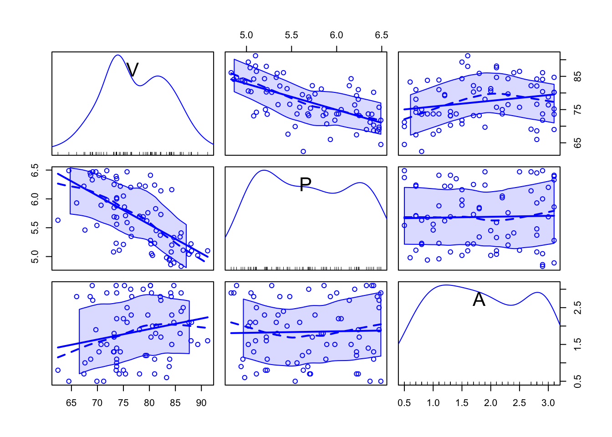
scatterplot(V ~ P, data=VENTAS,
smooth=list(smoother=loessLine, var=FALSE, lwd.smooth=3),
col="blue", regLine=list(lwd=3))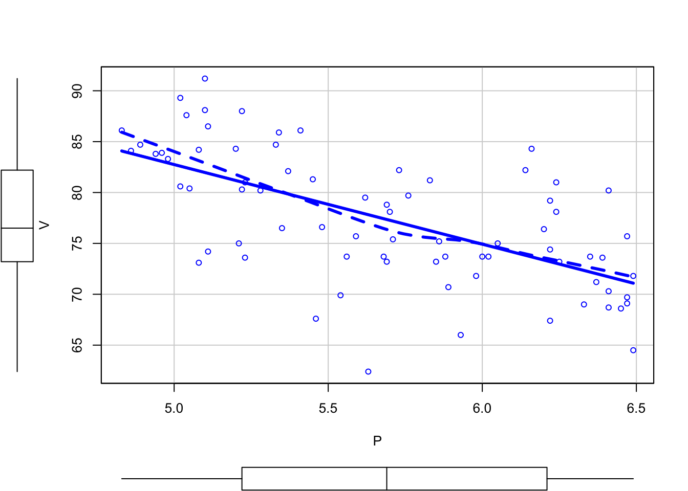
scatterplot(V ~ A, data=VENTAS,
smooth=list(smoother=loessLine, var=FALSE, lwd.smooth=3),
col="blue", regLine=list(lwd=3))
# Modelo de ventas
modelo_ventas_1 <- lm(V ~ P + A, data=VENTAS)
summary(modelo_ventas_1)
Call:
lm(formula = V ~ P + A, data = VENTAS)
Residuals:
Min 1Q Median 3Q Max
-13.4825 -3.1434 -0.3456 2.8754 11.3049
Coefficients:
Estimate Std. Error t value Pr(>|t|)
(Intercept) 118.9136 6.3516 18.722 < 2e-16 ***
P -7.9079 1.0960 -7.215 4.42e-10 ***
A 1.8626 0.6832 2.726 0.00804 **
---
Signif. codes: 0 '***' 0.001 '**' 0.01 '*' 0.05 '.' 0.1 ' ' 1
Residual standard error: 4.886 on 72 degrees of freedom
Multiple R-squared: 0.4483, Adjusted R-squared: 0.4329
F-statistic: 29.25 on 2 and 72 DF, p-value: 5.041e-10confint(modelo_ventas_1, level=.95) 2.5 % 97.5 %
(Intercept) 106.251852 131.575368
P -10.092676 -5.723032
A 0.500659 3.224510# Gráficos de efectos (Effects plots)
plot(allEffects(modelo_ventas_1), grid=TRUE, rug=TRUE)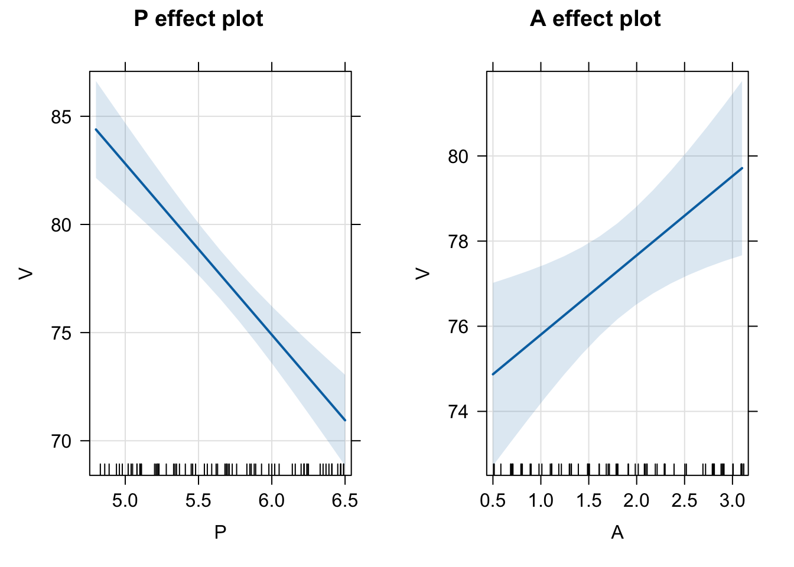
# Diagnósticos de la regresión
# Validación global de las hipótesis básicas del MRL
gvmodel <- gvlma(modelo_ventas_1)
summary(gvmodel)
Call:
lm(formula = V ~ P + A, data = VENTAS)
Residuals:
Min 1Q Median 3Q Max
-13.4825 -3.1434 -0.3456 2.8754 11.3049
Coefficients:
Estimate Std. Error t value Pr(>|t|)
(Intercept) 118.9136 6.3516 18.722 < 2e-16 ***
P -7.9079 1.0960 -7.215 4.42e-10 ***
A 1.8626 0.6832 2.726 0.00804 **
---
Signif. codes: 0 '***' 0.001 '**' 0.01 '*' 0.05 '.' 0.1 ' ' 1
Residual standard error: 4.886 on 72 degrees of freedom
Multiple R-squared: 0.4483, Adjusted R-squared: 0.4329
F-statistic: 29.25 on 2 and 72 DF, p-value: 5.041e-10
ASSESSMENT OF THE LINEAR MODEL ASSUMPTIONS
USING THE GLOBAL TEST ON 4 DEGREES-OF-FREEDOM:
Level of Significance = 0.05
Call:
gvlma(x = modelo_ventas_1)
Value p-value Decision
Global Stat 1.63722 0.8021 Assumptions acceptable.
Skewness 0.06397 0.8003 Assumptions acceptable.
Kurtosis 0.09499 0.7579 Assumptions acceptable.
Link Function 0.79527 0.3725 Assumptions acceptable.
Heteroscedasticity 0.68299 0.4086 Assumptions acceptable.# Chequeo general del modelo estimado
model_performance(modelo_ventas_1)# Indices of model performance
AIC | AICc | BIC | R2 | R2 (adj.) | RMSE | Sigma
---------------------------------------------------------------
455.739 | 456.310 | 465.009 | 0.448 | 0.433 | 4.787 | 4.886check_model(modelo_ventas_1)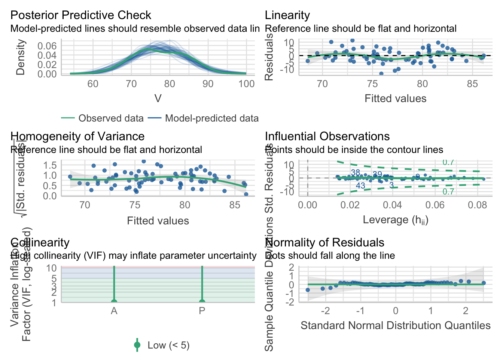
# Especificación del modelo
# Adecuación de la forma funcional: test RESET de Ramsey
resettest(modelo_ventas_1, power=2, type="fitted")
RESET test
data: modelo_ventas_1
RESET = 0.76092, df1 = 1, df2 = 71, p-value = 0.386resettest(modelo_ventas_1, power=2:3, type="fitted")
RESET test
data: modelo_ventas_1
RESET = 0.53369, df1 = 2, df2 = 70, p-value = 0.5888# Análisis gráfico de la hipótesis de linealidad
# Residuos estandarizados (Pearson)
residualPlots(modelo_ventas_1)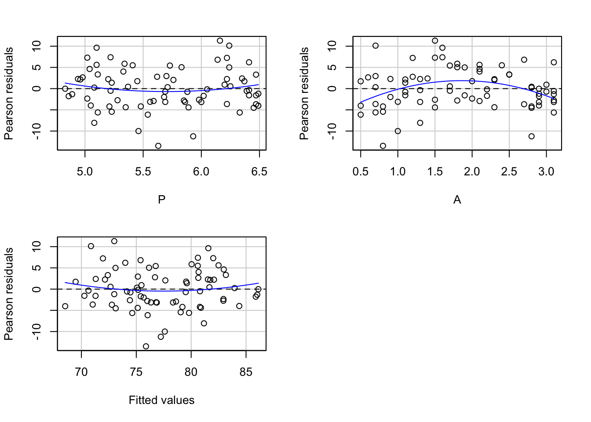
Test stat Pr(>|Test stat|)
P 1.0183 0.312016
A -2.9427 0.004393 **
Tukey test 0.8723 0.383040
---
Signif. codes: 0 '***' 0.001 '**' 0.01 '*' 0.05 '.' 0.1 ' ' 1# Gráficos de variables añadidas (AV plots)
# también denominados de regresiones parciales
avPlots(modelo_ventas_1) 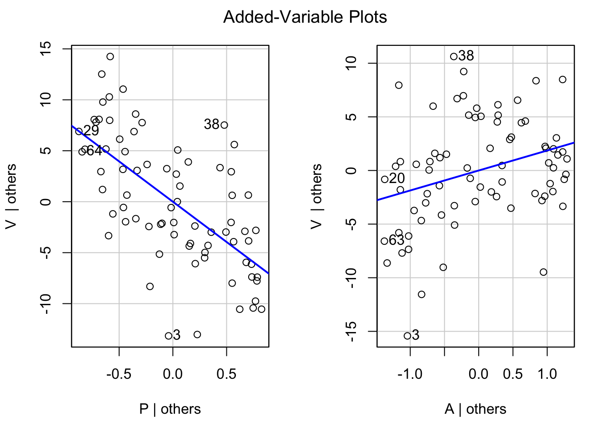
# Gráficos componente+residuos
# (Component-plus-Residual o Partial-residual plots)
crPlots(modelo_ventas_1) 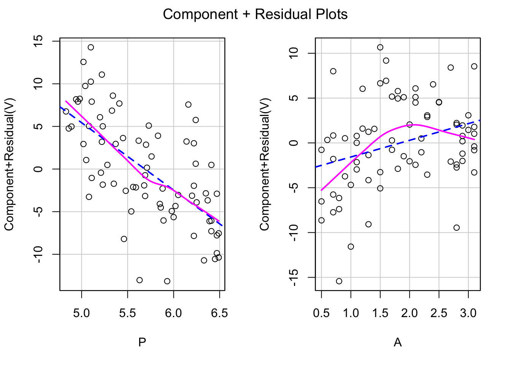
# Modelo generalizado: especificación cuadrática en A
modelo_ventas_2 <- lm(V ~ P + A + I(A^2), data=VENTAS)
summary(modelo_ventas_2)
Call:
lm(formula = V ~ P + A + I(A^2), data = VENTAS)
Residuals:
Min 1Q Median 3Q Max
-12.2553 -3.1430 -0.0117 2.8513 11.8050
Coefficients:
Estimate Std. Error t value Pr(>|t|)
(Intercept) 109.7190 6.7990 16.137 < 2e-16 ***
P -7.6400 1.0459 -7.304 3.24e-10 ***
A 12.1512 3.5562 3.417 0.00105 **
I(A^2) -2.7680 0.9406 -2.943 0.00439 **
---
Signif. codes: 0 '***' 0.001 '**' 0.01 '*' 0.05 '.' 0.1 ' ' 1
Residual standard error: 4.645 on 71 degrees of freedom
Multiple R-squared: 0.5082, Adjusted R-squared: 0.4875
F-statistic: 24.46 on 3 and 71 DF, p-value: 5.6e-11# Gráficos de efectos
plot(Effect("P", modelo_ventas_2))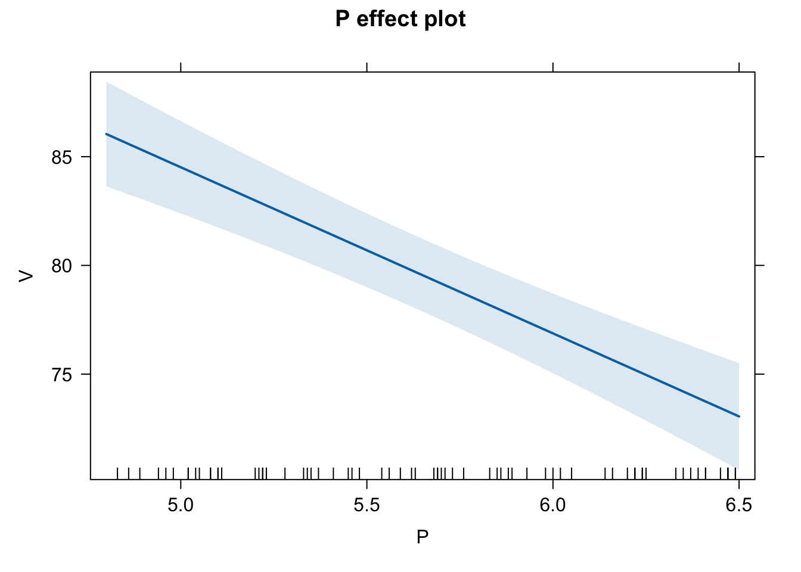
plot(Effect("A", modelo_ventas_2))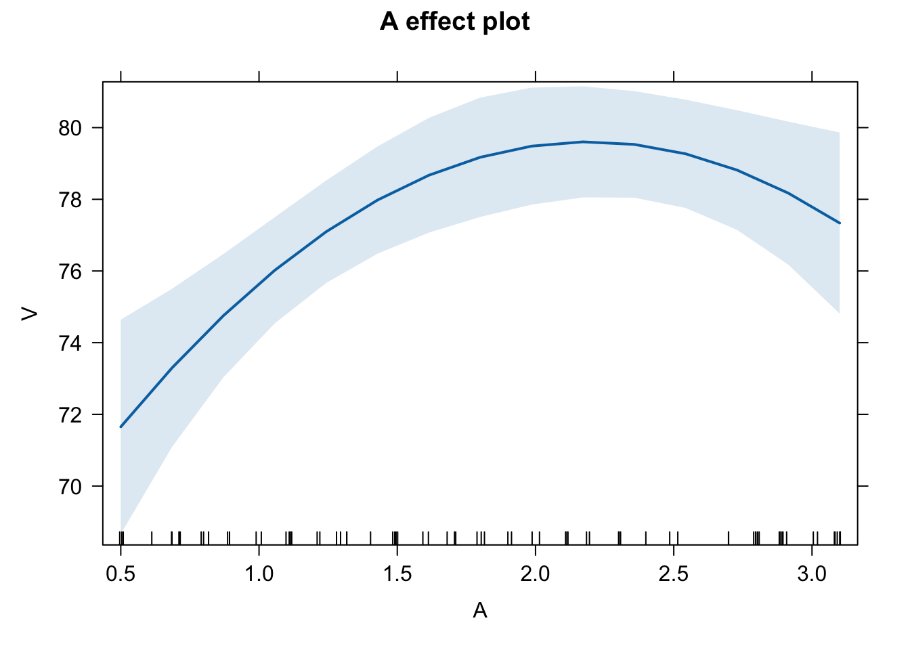
# Comparación con el modelo básico
compareCoefs(modelo_ventas_1, modelo_ventas_2)Calls:
1: lm(formula = V ~ P + A, data = VENTAS)
2: lm(formula = V ~ P + A + I(A^2), data = VENTAS)
Model 1 Model 2
(Intercept) 118.91 109.72
SE 6.35 6.80
P -7.91 -7.64
SE 1.10 1.05
A 1.863 12.151
SE 0.683 3.556
I(A^2) -2.768
SE 0.941
anova(modelo_ventas_1, modelo_ventas_2)Analysis of Variance Table
Model 1: V ~ P + A
Model 2: V ~ P + A + I(A^2)
Res.Df RSS Df Sum of Sq F Pr(>F)
1 72 1718.9
2 71 1532.1 1 186.86 8.6594 0.004393 **
---
Signif. codes: 0 '***' 0.001 '**' 0.01 '*' 0.05 '.' 0.1 ' ' 1compare_performance(modelo_ventas_1, modelo_ventas_2, rank = TRUE)# Comparison of Model Performance Indices
Name | Model | R2 | R2 (adj.) | RMSE | Sigma | AIC weights | AICc weights | BIC weights | Performance-Score
--------------------------------------------------------------------------------------------------------------------------
modelo_ventas_2 | lm | 0.508 | 0.487 | 4.520 | 4.645 | 0.965 | 0.960 | 0.896 | 100.00%
modelo_ventas_1 | lm | 0.448 | 0.433 | 4.787 | 4.886 | 0.035 | 0.040 | 0.104 | 0.00%plot(compare_performance(modelo_ventas_1, modelo_ventas_2, rank = TRUE))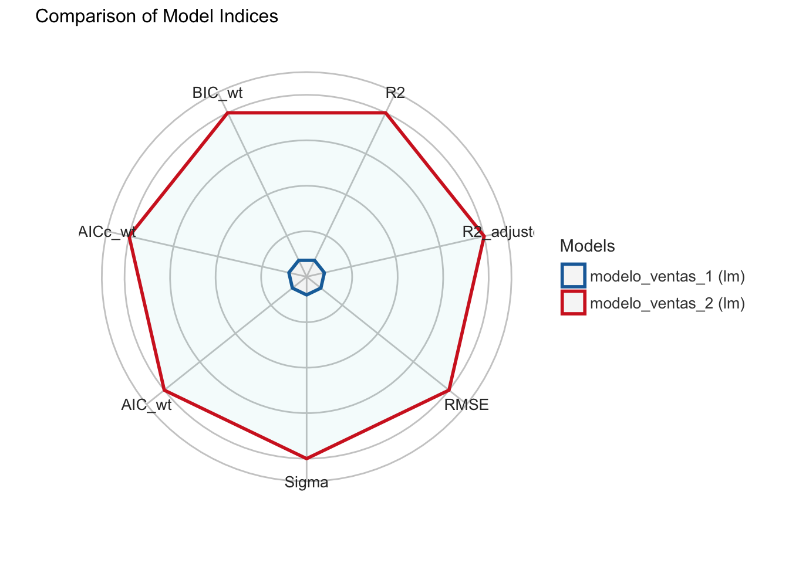
test_performance(modelo_ventas_1, modelo_ventas_2)Name | Model | BF | Omega2 | p (Omega2) | LR | p (LR)
--------------------------------------------------------------------
modelo_ventas_1 | lm | | | | |
modelo_ventas_2 | lm | 8.64 | 0.09 | 0.005 | 8.63 | 0.002
Models were detected as nested (in terms of fixed parameters) and are compared in sequential order.test_wald(modelo_ventas_1, modelo_ventas_2)Name | Model | df | df_diff | F | p
-----------------------------------------------------
modelo_ventas_1 | lm | 72 | | |
modelo_ventas_2 | lm | 71 | 1.00 | 8.66 | 0.004
Models were detected as nested (in terms of fixed parameters) and are compared in sequential order.test_bf(modelo_ventas_1, modelo_ventas_2)Bayes Factors for Model Comparison
Model BF
[modelo_ventas_2] P + A + I(A^2) 8.64
* Against Denominator: [modelo_ventas_1] P + A
* Bayes Factor Type: BIC approximationtest_vuong(modelo_ventas_1, modelo_ventas_2)Name | Model | Omega2 | p (Omega2) | LR | p (LR)
-------------------------------------------------------------
modelo_ventas_1 | lm | | | |
modelo_ventas_2 | lm | 0.09 | 0.005 | 8.63 | 0.002
Models were detected as nested (in terms of fixed parameters) and are compared in sequential order.Código Python
# Lectura de librerías
import numpy as np
import pandas as pd
import matplotlib.pyplot as plt
import seaborn as sns
import statsmodels.api as sm
import statsmodels.formula.api as smf
import statsmodels.stats.api as sms
import statsmodels.stats as smstats
import statsmodels.stats.diagnostic as smsdiag
from statsmodels.stats.outliers_influence import reset_ramsey
from statsmodels.compat import lzip
import scipy.stats as scs
# Lectura de datos
VENTAS = pd.read_csv("data/VENTAS_SUPER.csv")
# Estructura de la base de datos
VENTAS.info()<class 'pandas.core.frame.DataFrame'>
RangeIndex: 75 entries, 0 to 74
Data columns (total 3 columns):
# Column Non-Null Count Dtype
--- ------ -------------- -----
0 A 75 non-null float64
1 P 75 non-null float64
2 V 75 non-null float64
dtypes: float64(3)
memory usage: 1.9 KBVENTAS.head() A P V
0 1.3 5.69 73.2
1 2.9 6.49 71.8
2 0.8 5.63 62.4
3 0.7 6.22 67.4
4 1.5 5.02 89.3VENTAS.tail() A P V
70 1.7 5.73 82.2
71 0.7 5.11 74.2
72 0.7 5.71 75.4
73 2.0 5.45 81.3
74 2.2 6.05 75.0VENTAS.describe() A P V
count 75.000000 75.000000 75.000000
mean 1.844000 5.687200 77.374667
std 0.831677 0.518432 6.488537
min 0.500000 4.830000 62.400000
25% 1.100000 5.220000 73.200000
50% 1.800000 5.690000 76.500000
75% 2.700000 6.210000 82.200000
max 3.100000 6.490000 91.200000# Modelo de ventas
formula = 'V ~ P + A'
modelo_ventas_1 = smf.ols(formula, VENTAS).fit()
print(modelo_ventas_1.summary()) OLS Regression Results
==============================================================================
Dep. Variable: V R-squared: 0.448
Model: OLS Adj. R-squared: 0.433
Method: Least Squares F-statistic: 29.25
Date: Wed, 15 Nov 2023 Prob (F-statistic): 5.04e-10
Time: 09:32:50 Log-Likelihood: -223.87
No. Observations: 75 AIC: 453.7
Df Residuals: 72 BIC: 460.7
Df Model: 2
Covariance Type: nonrobust
==============================================================================
coef std err t P>|t| [0.025 0.975]
------------------------------------------------------------------------------
Intercept 118.9136 6.352 18.722 0.000 106.252 131.575
P -7.9079 1.096 -7.215 0.000 -10.093 -5.723
A 1.8626 0.683 2.726 0.008 0.501 3.225
==============================================================================
Omnibus: 0.535 Durbin-Watson: 2.183
Prob(Omnibus): 0.765 Jarque-Bera (JB): 0.159
Skew: -0.072 Prob(JB): 0.924
Kurtosis: 3.174 Cond. No. 69.5
==============================================================================
Notes:
[1] Standard Errors assume that the covariance matrix of the errors is correctly specified.# Especificación del modelo
# Adecuación de la forma funcional: test RESET de Ramsey
reset_ramsey(modelo_ventas_1,degree=2)<class 'statsmodels.stats.contrast.ContrastResults'>
<F test: F=0.7609212886079043, p=0.3859807963132884, df_denom=71, df_num=1>reset_ramsey(modelo_ventas_1,degree=3)<class 'statsmodels.stats.contrast.ContrastResults'>
<F test: F=0.5336864235712575, p=0.5888060456090185, df_denom=70, df_num=2># Análisis gráfico de la hipótesis de linealidad
# Gráficos de variables añadidas (AV plots)
fig = sm.graphics.plot_partregress_grid(modelo_ventas_1)eval_env: 1
eval_env: 1
eval_env: 1fig.tight_layout(pad=1.0)
plt.show()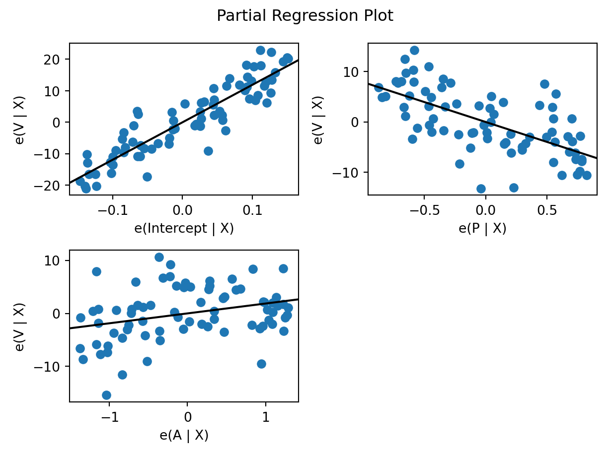
# Gráficos componente+residuos
fig = sm.graphics.plot_ccpr_grid(modelo_ventas_1)
fig.tight_layout(pad=1.0)
plt.show()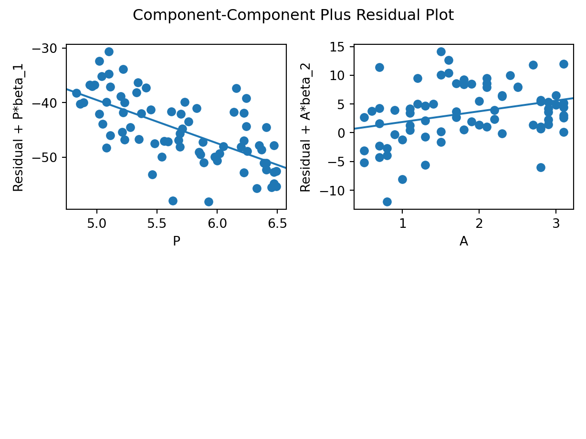
# Diagnósticos de regresión de una sola variable
fig = sm.graphics.plot_regress_exog(modelo_ventas_1, "P")eval_env: 1fig.tight_layout(pad=1.0)
plt.show()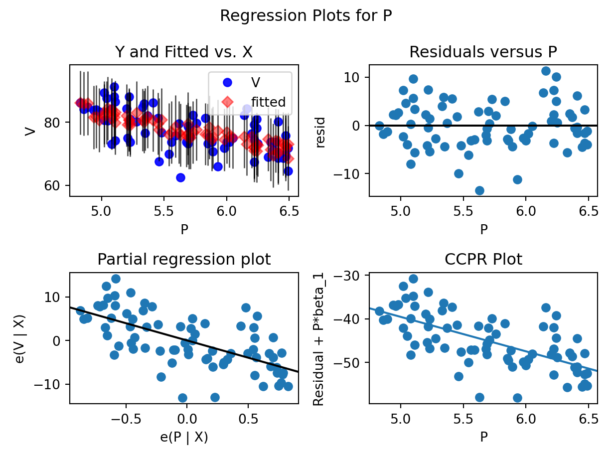
fig = sm.graphics.plot_regress_exog(modelo_ventas_1, "A")eval_env: 1fig.tight_layout(pad=1.0)
plt.show()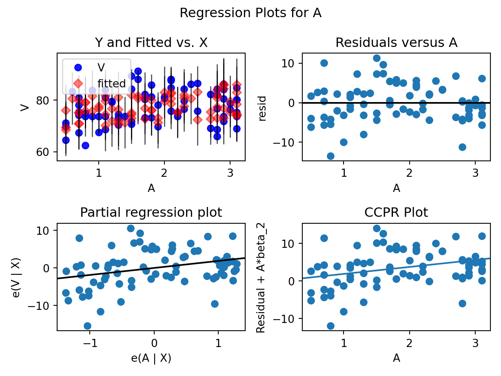
# Modelo generalizado: especificación cuadrática en A
formula = 'V ~ P + A + + I(A**2)'
modelo_ventas_2 = smf.ols(formula, VENTAS).fit()
print(modelo_ventas_2.summary()) OLS Regression Results
==============================================================================
Dep. Variable: V R-squared: 0.508
Model: OLS Adj. R-squared: 0.487
Method: Least Squares F-statistic: 24.46
Date: Wed, 15 Nov 2023 Prob (F-statistic): 5.60e-11
Time: 09:32:53 Log-Likelihood: -219.55
No. Observations: 75 AIC: 447.1
Df Residuals: 71 BIC: 456.4
Df Model: 3
Covariance Type: nonrobust
==============================================================================
coef std err t P>|t| [0.025 0.975]
------------------------------------------------------------------------------
Intercept 109.7190 6.799 16.137 0.000 96.162 123.276
P -7.6400 1.046 -7.304 0.000 -9.726 -5.554
A 12.1512 3.556 3.417 0.001 5.060 19.242
I(A ** 2) -2.7680 0.941 -2.943 0.004 -4.644 -0.892
==============================================================================
Omnibus: 1.004 Durbin-Watson: 2.043
Prob(Omnibus): 0.605 Jarque-Bera (JB): 0.455
Skew: -0.088 Prob(JB): 0.797
Kurtosis: 3.339 Cond. No. 101.
==============================================================================
Notes:
[1] Standard Errors assume that the covariance matrix of the errors is correctly specified.